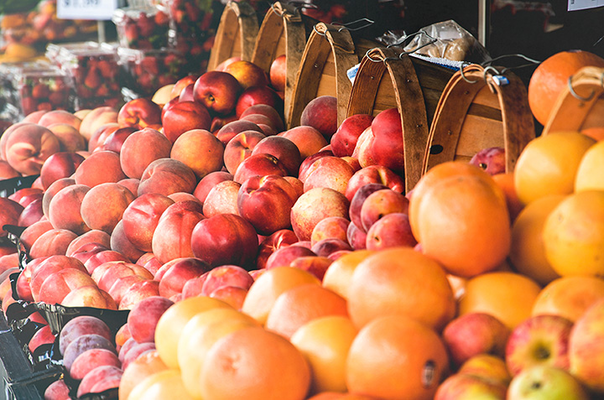
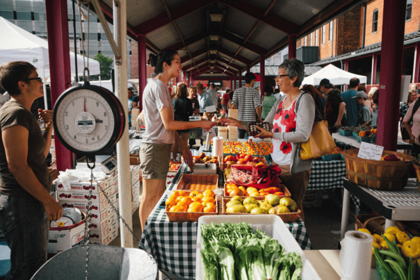
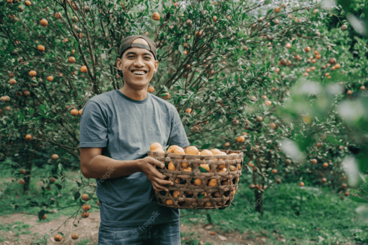

We are Bountiful Foods

We are a small business, who's goal is to
bring fresh and organic produce all along the coast!
From fresh produce, to delicious smoothies that you can enjoy
as you stroll along california's beautiful beaches.
You can count on us!
We are local!
Based out Carlsbad, we have spread across the coast from San-Diego to Los Angeles. Bringing fresh fruits and produce directly from the farmers to you! You can find the owner-operated stores that cater to walk in traffic at their storefronts in Carlsbad and, of course, their food trucks.
Our Wish
Our mission is to promote healthy eating and provide conveinent, made to order fruit bags and drinks to the local population and those who visit the coast from wherever they come!